Análisis, Arquitectura y Base de Datos
MediConnect (Proyecto Productivo)
APRENDIZ:
PEDRO PABLO CONTRERAS VEGA
INSTRUTOR:
EDGAR CARVAJAL CACERES
Servicio Nacional de Aprendizaje (SENA)
PROGRAMACION DE SOFTWARE (Ficha: 3186277)
TECNICO
2026
El siguiente bloque contiene las Historias de Usuario priorizadas
para el MVP. Cada historia describe el rol, la necesidad y los criterios
de aceptación que guiarán el desarrollo, las pruebas y la priorización
de entregas. Las HU están organizadas por épicas funcionales para
facilitar la trazabilidad entre requisitos, tareas y casos de
prueba.
Historias de Usuario
ÉPICA 1: Autenticación y Control de Acceso
(RBAC)
HU-01: Autenticación de Usuarios (Login)
Como Usuario del sistema (Administrador, Médico o
Recepcionista).
Quiero iniciar sesión utilizando mis
credenciales.
Para acceder a las funciones del sistema según mi
nivel de permisos.
Criterios de Aceptación:
El sistema debe validar el usuario y contraseña contra la base de
datos.
Las contraseñas deben estar encriptadas utilizando el algoritmo
Argon2.
Una autenticación exitosa debe generar y retornar un token JWT (JSON
Web Token) sin estado.
El frontend debe redirigir al dashboard correspondiente según el rol
extraído del JWT (RF-01).
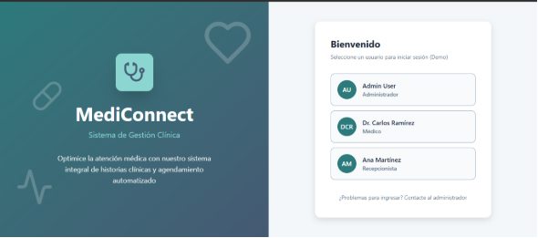
HU-02: Renderizado Dinámico de Interfaces
Como Usuario autenticado.
Quiero ver únicamente las opciones de navegación
correspondientes a mi rol.
Para no tener acceso a vistas no autorizadas.
Criterios de Aceptación:
Si el rol es MÉDICO, el sidebar debe ocultar “Gestión de Usuarios” y
mostrar “Mis Pacientes” y “Mi Agenda”.
Cualquier intento de forzar una URL no autorizada en el frontend
debe redirigir a una pantalla de error 403.
El backend debe rechazar peticiones a endpoints restringidos
mediante la configuración del SecurityFilterChain.
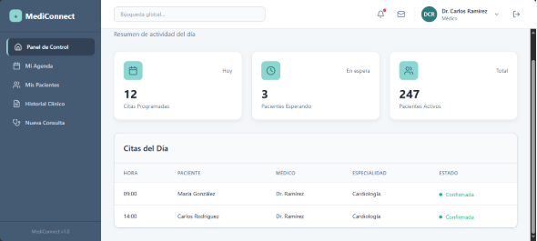
ÉPICA 2: Admisión y Aprovisionamiento
HU-03: Registro de Paciente y Aprovisionamiento de
Expediente
Como Recepcionista.
Quiero registrar a un paciente nuevo en el
sistema.
Para poder agendarle citas posteriormente.
Criterios de Aceptación:
El formulario debe requerir obligatoriamente Documento, Nombre
Completo, Teléfono y Fecha de Nacimiento.
Transaccionalidad Crítica: Al guardar al paciente
en la tabla patients, el backend debe generar automáticamente (en la
misma transacción) un registro vacío en la tabla medical_records
vinculado a este paciente.
Si falla la creación de la Historia Clínica, debe hacerse un
rollback y no debe guardarse al paciente.
El documento de identidad debe ser único (UNIQUE constraint). El
sistema debe lanzar un error 409 si se intenta duplicar.
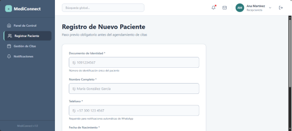
ÉPICA 3: Gestión de Agenda Médica
Historia de Usuario 04 (HU-04): Motor de Agendamiento
Concurrente
Como Recepcionista.
Quiero agendar una cita médica asignando un
paciente, un médico y una fecha/hora específica.
Para reservar el espacio en la agenda clínica sin
riesgo de colisiones horarias.
Criterios de Aceptación:
El sistema debe validar la existencia de una Historia Clínica
(MedicalRecord) asociada al paciente. Si no existe, la transacción debe
ser rechazada.
El sistema debe asumir bloques de consulta de exactamente 30
minutos.
Control de Concurrencia: Si dos usuarios intentan agendar al mismo
médico en intervalos que se solapen, el sistema debe bloquear el
registro del médico a nivel de base de datos (PESSIMISTIC_WRITE) y
rechazar la segunda petición con un error HTTP 409 (Conflict).
La cita debe crearse con estado SCHEDULED y todos los campos
clínicos (signos vitales, notas) deben inicializarse como nulos.
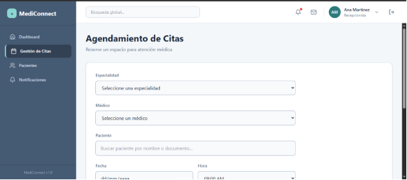
Historia de Usuario 05 (HU-05): Automatización de
Notificaciones Asíncronas
Como Sistema (Backend).
Quiero emitir una alerta de notificación
inmediatamente después de confirmar una cita.
Para que el servicio de integración (n8n) envíe la
confirmación por WhatsApp al paciente sin congelar la interfaz de la
recepcionista.
Criterios de Aceptación:
El evento de notificación solo debe dispararse después de que la
base de datos confirme el guardado de la cita (After Commit).
El sistema debe registrar la notificación en la base de datos con
estado PENDING antes de hacer la petición HTTP.
El payload enviado al webhook debe contener el ID de la
notificación, nombre del paciente, número de destino, nombre del médico
y fecha en formato ISO 8601.
Si el servidor de n8n no responde, el sistema debe capturar el error
y cambiar el estado en la base de datos a FAILED sin detener la
ejecución de la aplicación.
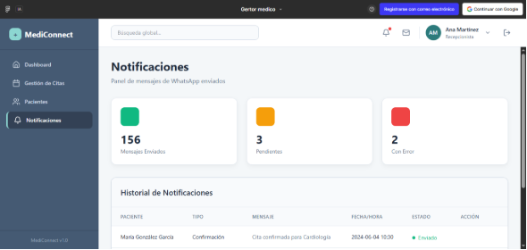
ÉPICA 4: Ejecución Clínica (Modelo Híbrido)
HU-06: Registro de Atención Médica
Como Médico.
Quiero registrar los datos clínicos de un paciente
durante su cita.
Para mantener la trazabilidad de su historia
clínica.
Criterios de Aceptación:
El médico solo puede registrar datos en una cita cuyo estado sea
SCHEDULED.
Al guardar, el estado de la cita debe cambiar a COMPLETED.
Validación Estructural: Los campos de signos
vitales deben respetar las restricciones de la base de datos (ej.
Presión sistólica entre 0 y 300).
El sistema debe permitir actualizar únicamente los campos clínicos
de la entidad consultations (peso, presión, CIE-10, notas), manteniendo
inmutables la fecha original y el médico asignado.
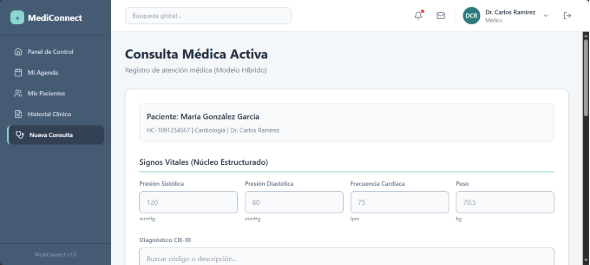
HU-07: Visualización de Línea de Tiempo Clínica
Como Médico.
Quiero consultar el historial de atenciones previas
de un paciente.
Para tomar decisiones médicas informadas.
Criterios de Aceptación:
La interfaz debe cargar todas las citas en estado COMPLETED
asociadas al medical_record_id del paciente.
La información debe presentarse en orden cronológico descendente
(las más recientes primero).
Estas consultas pasadas deben ser estrictamente de solo lectura
(inmutabilidad de datos).
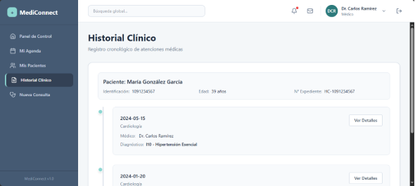
ÉPICA 5: Administración Global del Sistema
HU-08: Gestión Integral de Personal (Pantalla: Gestión de
Usuarios)
Como Administrador.
Quiero administrar el acceso y los datos del
personal de la clínica (médicos y recepcionistas).
Para mantener el control operativo y la seguridad
del sistema.
Criterios de Aceptación:
El sistema debe listar a todos los usuarios mostrando su rol y
especialidad (si aplica).
Al crear un usuario con el rol MÉDICO, el backend debe insertar los
datos en la tabla users y simultáneamente crear su perfil en la tabla
doctors (relación 1:1).
Soft Delete: El interruptor (toggle) de
“Activo/Inactivo” no debe borrar el registro de la base de datos, sino
cambiar el campo booleano is_active a false. Un usuario inactivo debe
recibir un error 401 si intenta iniciar sesión.
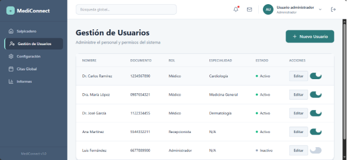
HU-09: Panel de Reportes Clínicos (Pantalla:
Reportes)
Como Administrador.
Quiero visualizar estadísticas consolidadas sobre
la operación de la clínica.
Para analizar el volumen de atención y la
prevalencia de diagnósticos.
Criterios de Aceptación:
El dashboard debe consumir un endpoint que retorne el conteo total
de consultas en estado COMPLETED para el mes actual.
El sistema debe calcular y mostrar la distribución de los
“Diagnósticos Más Frecuentes”, ejecutando una consulta de agrupación
(GROUP BY icd10_code) en PostgreSQL, ordenada de mayor a menor
frecuencia.
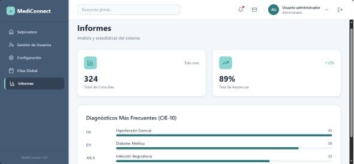
Diagrama Relacional
A continuación se presenta el Diagrama Entidad-Relación (ER) que
modela las principales entidades del sistema y sus relaciones. Este
diagrama ilustra entidades clave como users, patients, medical_records,
doctors, consultations y notifications.
Diagramas de Flujo de la Aplicación
Los diagramas de flujo muestran los procesos críticos: el flujo de
agendamiento desde recepción hasta confirmación, el envío asíncrono de
notificaciones mediante n8n, y el flujo de atención médica durante la
consulta. Cada diagrama destaca las decisiones, transacciones
After-Commit y puntos de integración externa que requieren pruebas e
instrumentación.
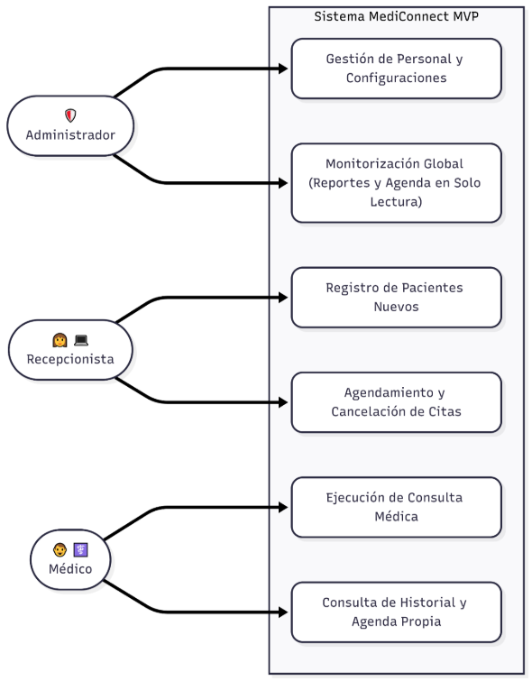
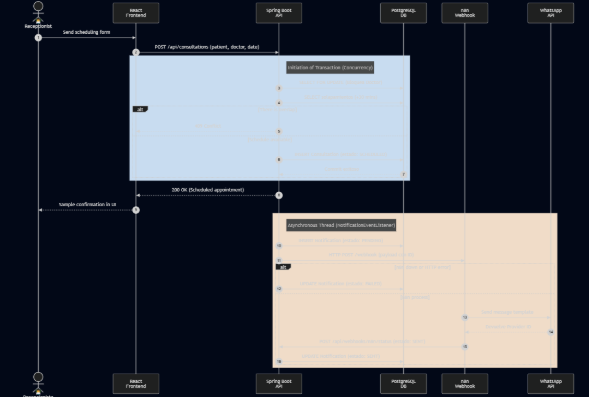
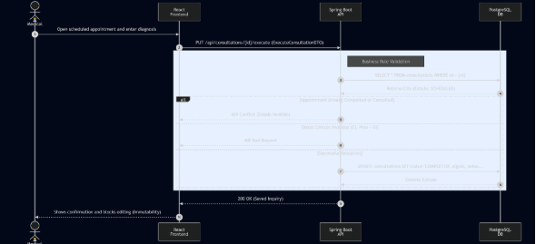
Contratos de API (Especificación de Integración)
Para garantizar el desacoplamiento entre el frontend (React) y el
backend (Spring Boot), el sistema operará bajo una arquitectura RESTful
estricta. A continuación se documenta el contrato del endpoint más
crítico del sistema (Agendamiento), el cual servirá como estándar para
el resto de la API.
Endpoint: POST /api/consultations
Propósito: Registrar una nueva cita médica ejecutando validación de
concurrencia.
201 Created: La cita fue agendada exitosamente. Retorna el ID de la
cita generada.
400 Bad Request: Estructura JSON inválida o fecha en el pasado.
409 Conflict: Violación de regla de negocio. El médico ya tiene una
cita asignada en ese bloque de 30 minutos (Solapamiento).
403 Forbidden: El token JWT es válido, pero el usuario no tiene el
rol de RECEPCIONISTA.
Requisitos No Funcionales (RNF) y Seguridad
Dado que MediConnect procesará información clínica protegida, el
sistema debe adherirse a restricciones técnicas rigurosas que no son
negociables.
Seguridad y Control de Acceso:
Encriptación de Credenciales: Todas las contraseñas en la tabla
users serán procesadas por el algoritmo Argon2id (estándar OWASP
actual). Prohibido el uso de MD5 o SHA-256 sin salt.
Ciclo de Vida del Token (TTL): El token JWT tendrá un tiempo de
expiración estricto de 2 horas. No se implementará Refresh
Token. Por seguridad clínica, si un médico deja la sesión abierta,
el sistema debe forzar un nuevo login para evitar accesos no autorizados
al consultorio.
CORS (Cross-Origin Resource Sharing): El backend de Spring Boot
estará configurado para aceptar peticiones HTTP única y exclusivamente
desde el dominio/IP exacto donde esté desplegado el frontend de
React.
Rendimiento y Disponibilidad:
Tiempo de Respuesta (Latencia): Las transacciones de lectura (GET)
deben responder en menos de 300ms. Las transacciones de escritura
compleja (como agendamiento con bloqueo en base de datos) no deben
superar los 800ms.
Bloqueos de Base de Datos: Las consultas de disponibilidad de agenda
utilizarán bloqueos pesimistas (PESSIMISTIC_WRITE) limitados
estrictamente al nivel de fila para no congelar la tabla completa de
consultations.
Arquitectura de Despliegue (Infraestructura
Single-Tenant)
El sistema está diseñado bajo un modelo Single-Tenant (una
instancia de infraestructura por clínica) para garantizar el aislamiento
físico de los datos médicos.
flowchart LR
subgraph server["Servidor VPS de Producción"]
frontend[Nginx<br/>React Frontend]
backend[Spring Boot<br/>REST API]
db[PostgreSQL<br/>Database]
n8n[n8n<br/>Webhook Server]
end
browser["Navegador Cliente"]
whatsapp["Meta WhatsApp API"]
browser --> frontend
browser --> backend
backend --> db
backend --> n8n
n8n --> whatsapp
(Nota sobre la gráfica: Muestra explícitamente que el navegador
del cliente descarga el frontend desde Nginx, pero se comunica
directamente con la API de Spring Boot. Spring Boot orquesta la base de
datos y dispara los eventos hacia el contenedor local de n8n, el cual es
el único con salida hacia Meta).
Matriz de Riesgos Técnicos (Contingencia)
El diseño asume que los componentes fallarán. Esta matriz define la
tolerancia a fallos del sistema y las rutas de mitigación.
Componente Crítico
Riesgo Identificado
Impacto Operativo
Estrategia de Mitigación (Fallback)
Base de Datos (PostgreSQL)
Corrupción de datos o caída del
servidor.
CRÍTICO. Pérdida total de historias
clínicas y agenda.
Automatización de rutinas pg_dump a las
02:00 AM. Los volcados encriptados se enviarán fuera del servidor a un
espacio de almacenamiento en la nube de alta capacidad (ej. TeraBox /
AWS S3) garantizando un RTO (Tiempo de recuperación) menor a 4
horas.
Integración n8n / Meta
Caída de la API de Meta o error en el
webhook local de n8n.
MODERADO. Los pacientes no reciben
confirmación por WhatsApp.
Desacoplamiento asíncrono. La caída de n8n
no congela el agendamiento. El backend marca el registro en la tabla
notifications como FAILED. La recepcionista revisa el panel de alertas y
llama al paciente manualmente.
Red (Latencia)
Conexión a internet inestable en la
clínica.
MODERADO. Errores de timeout al
intentar guardar la evolución médica.
El frontend en React implementará un botón
de reintento en las peticiones que fallen por error de red
(ERR_NETWORK), manteniendo el payload en el estado (state) para
que el médico no pierda lo que escribió.
Cronograma
Detallado (6 Meses - Entregas Mensuales)
Mes 1 (Entrega 1): Análisis, Arquitectura y Base de Datos.
Artefactos: Documento de Arquitectura (SAD), Casos de Uso, Modelo
Relacional, script V1__init_schema_mediconnect.sql y Prototipos UI en
Figma. (Fase actual completada).
Mes 2 (Entrega 2): Backend - Seguridad y Entidades Base (Spring
Boot). Entregables: Configuración de Spring Security con JWT y
encriptación Argon2id. Endpoints CRUD para Usuarios (RBAC estricto),
Doctores y Pacientes.
Mes 3 (Entrega 3): Backend - Motor Transaccional y
Automatización. Entregables: Lógica de agendamiento con manejo de
concurrencia (PESSIMISTIC_WRITE), endpoints para ejecución de consultas
clínicas (inmutabilidad). Programación del hilo asíncrono y
configuración del flujo receptor en n8n.
Mes 4 (Entrega 4): Frontend - Estructura y Seguridad (React).
Entregables: Inicialización con Vite, enrutamiento protegido (React
Router), Contexto de Autenticación para el token JWT, renderizado
dinámico del Layout (Sidebar según roles) y maquetación de vistas
CRUD.
Mes 5 (Entrega 5): Frontend - Integración Transaccional.
Entregables: Conexión asíncrona (Axios/Fetch) con la API para el módulo
complejo de agendamiento, validación de formularios de evolución
clínica, y mapeo de errores HTTP (renderizar correctamente el 409
Conflict o 400 Bad Request en la UI).
Mes 6 (Entrega 6): QA, Pruebas de Integración y Preparación de
Despliegue. Entregables: Ejecución de pruebas unitarias y de integración
(JUnit/Testcontainers), corrección de fallos de interfaz, separación de
variables de entorno para infraestructura y empaquetado final del
software (el archivo .jar del backend y el directorio build estático del
frontend).
Plan de Pruebas (Detalle)
Unit Tests: JUnit + Mockito para servicios y lógica de negocio.
Cobertura objetivo mínima 65% en servicios críticos.
Integration Tests: Spring Boot Test con base de datos en memoria
(Testcontainers/Postgres). Escenarios: agendamiento concurrente,
creación de paciente con medical record, endpoints de notificación.
Pruebas de Concurrencia: Simular N usuarios intentando reservar el
mismo bloque; validar que solo 1 transacción persiste y las demás
reciben 409.